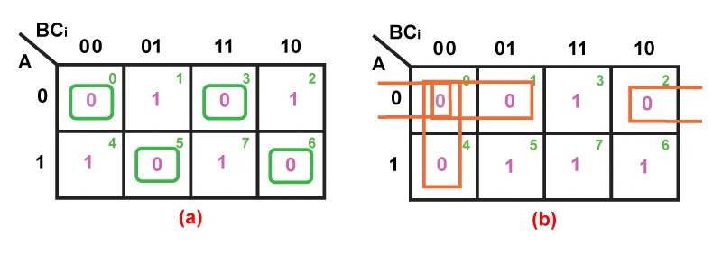

Karnaugh Maps simplify Boolean expressions using a visual grid-based method. This helps minimize logic circuits — essential for efficient digital design.
🧾 What is a K-Map?
A Karnaugh Map (K-Map) is a diagram made of cells, each representing a truth table value. Adjacent cells differ by one variable, enabling simplification using adjacency.
🧮 2-Variable K-Map
AB
0
1
0
0
1
1
1
0
K-map cells show outputs of the truth table; adjacent 1s can be grouped to simplify expressions.
🧮 3-Variable K-Map

🎞️ Animated Grouping (Simplification)
Group 1s in powers of two (1, 2, 4, 8) — larger groups mean simpler expressions!
📘 Simplification Rules
Only group 1s (logic high outputs)
Groups must be 1, 2, 4, 8 cells
Groups must be rectangular (no diagonal)
Wrap around edges is allowed
📚 Example
Given: F(A,B,C) = Σ(1,3,5,7)
→ Place 1s in cells 1,3,5,7 on a 3-variable K-map
→ Group 1s
→ Simplified F = B·C
🧠 Quick Quiz
Q1: What group size can you use in K-map simplification?